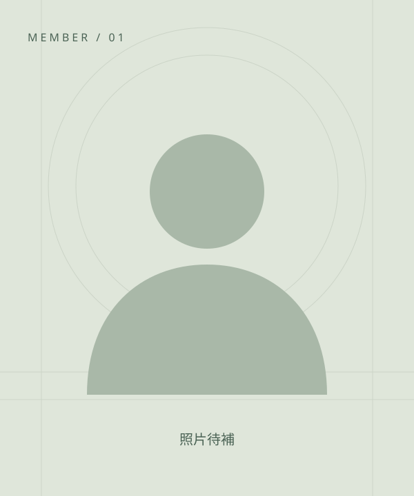
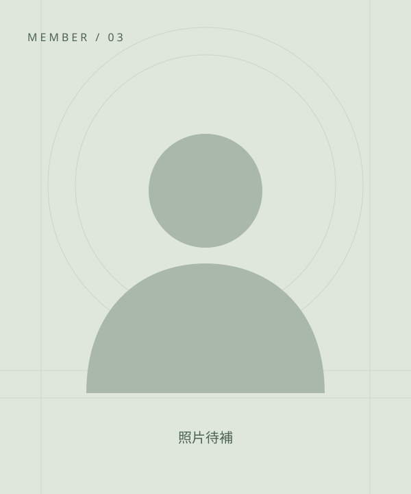
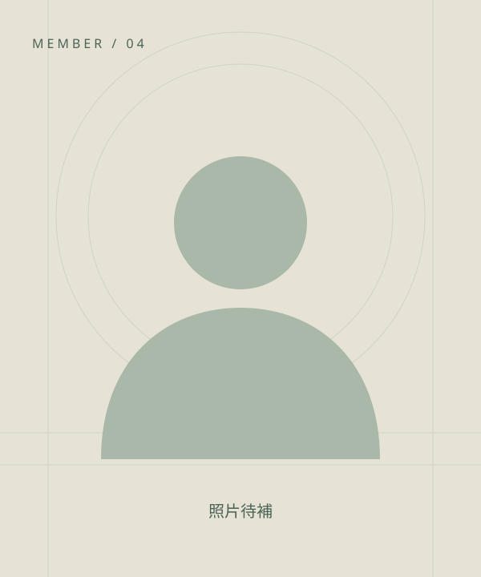

組長吳純文
01自我介紹
我是吳純文，個性活潑、開朗，也很有責任心。喜歡用笑聲與熱情帶給身邊的人好心情，希望在團隊中發揮凝聚大家的力量，一起完成有趣且實用的作品。
專題參與心得
這次擔任組長，最大的挑戰是前期的主題構想。面對快速發展的科技，我學習跳脫原本較保守的思考方式，聆聽組員提出的不同想法。透過討論與彼此互補，我們逐步確立專題方向，也讓我體會到，帶領團隊需要整合意見，讓每個人的長處都能發揮。
THE PEOPLE BEHIND THE DATA
組員資料
以永續金融為共同關注，結合資料管理、
AI 與網頁實作，探索 ESG 資訊的應用。
已收錄六位組員的專題心得，並依提供內容精簡呈現；標示「待補」的資料與個人照片，待本人補充。

組長我是吳純文，個性活潑、開朗，也很有責任心。喜歡用笑聲與熱情帶給身邊的人好心情，希望在團隊中發揮凝聚大家的力量，一起完成有趣且實用的作品。
這次擔任組長，最大的挑戰是前期的主題構想。面對快速發展的科技，我學習跳脫原本較保守的思考方式，聆聽組員提出的不同想法。透過討論與彼此互補，我們逐步確立專題方向，也讓我體會到，帶領團隊需要整合意見，讓每個人的長處都能發揮。
平時熱衷於研究大型語言模型（LLM）應用與 API 串接技術、全端系統開發及資料視覺化呈現。喜歡探索如何透過數位工具與 AI 技術，將繁瑣的資料處理流程自動化，解決企業實務上的作業痛點。
這次專題讓我理解，永續資料整理需要釐清年度、單位、組織範圍及實績與目標，才能支援可靠的分析。在規劃上傳、AI 檢查、人工修改與資料庫匯入流程時，我也學會從使用者需求思考系統。透過團隊討論與反覆修正，我更了解前後端、資料庫與 Power BI 如何銜接，也體會到資料品質與來源追溯的重要性。

組員我是陳星妤，個性隨和，樂於接受新想法。平常喜歡研究技術與自動化工具，享受把複雜事情變簡單的過程，也習慣聆聽不同意見，與團隊一起學習、進步。
在 MySQL 與 Power BI 的整合過程中，我學習修改 SQL 語法、運用 Power Query 轉換欄位，並比較不同資料連線模式的適用情境。從資料庫到 ESG 儀表板的實作，讓我更了解跨平台資料流程，也體會到資料更新需求與系統效能之間需要取得平衡。

組員我是陳奕杰，遇到感興趣的事物，就喜歡花時間研究、慢慢摸索。靠自己解決問題，就像玩遊戲時努力過關一樣，完成的那一刻總讓我很有成就感。
這次負責網頁設計與整合測試，透過定期開會、確認進度與調整方向，我更體會到時程管理及品質把關的重要。雖然過程有壓力，但在組員合作與老師的指導下，我們逐步將專題從想法變成作品，也讓我學會在協作中持續修正與成長。
我是謝采玲，喜歡追問問題背後的原因，從不同線索中拆解問題、尋找解法。平常樂於探索新科技與有趣工具，也享受把複雜事情一步步理清的過程。
這次負責報告書摘要與未來建議功能，透過 API 串接，將永續報告交由 AI 分析後呈現在網頁。實作讓我發現，資料格式、處理時間與錯誤訊息都會影響使用體驗。透過查資料與反覆測試，我更了解後端運作及前後端整合，也學會留意課堂之外的實作細節。
我是吳佳穎，對新事物充滿好奇，喜歡看電影、聽音樂，尤其喜愛科幻電影。與人相處時，我習慣先觀察與聆聽，也樂於接受不同意見，在探索與學習中持續成長。
這次主要負責市場與商業分析，也參與海報製作及競賽手冊整理。要在有限篇幅中說清楚系統功能、特色與架構，需要反覆修改文字與調整版面。這段經驗讓我學會整理資訊、掌握重點，也體會到專題除了系統開發，成果的呈現與表達同樣需要用心。